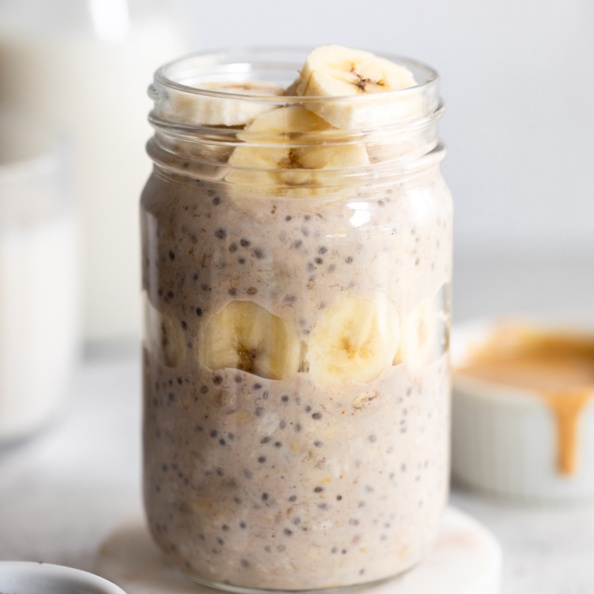

Overnight Oats

Overnight oats are a great healthy breakfast
It is so easy to make overnight oats, and because you prep them the night before, you can get up the next day knowing your breakfast is sorted.
The ingredients list and recipe instructions can be found below. Makes 1 portion.
Bon appetit!
Ingredients
- 1/4 tsp cinnamon
- 50g oats
- 100ml oat milk
- 1 banana
- tsp honey
- 1/2 tbsp peanut butter
Steps
- Pour oats into a mason jar.
- Add cinnamon, honey, and peanut butter.
- Pour over 100ml oat milk, stir until well mixed, add lid to mason jar, and place oats in fridge overnight.
- In the morning, open jar and chop in banana. Add more oat milk to loosen oats if necessary.
- Enjoy your morning!
Home